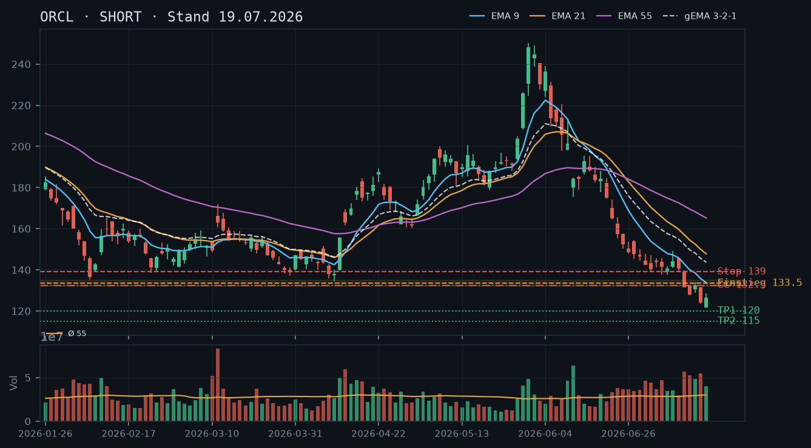
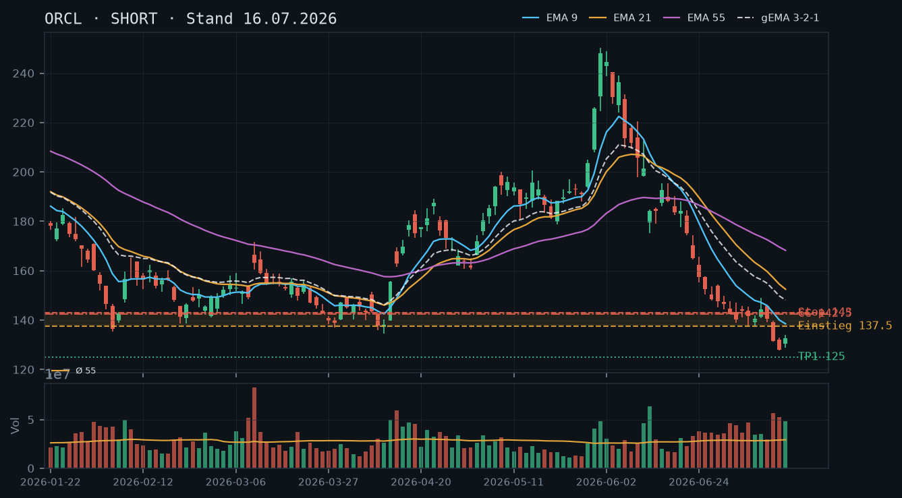
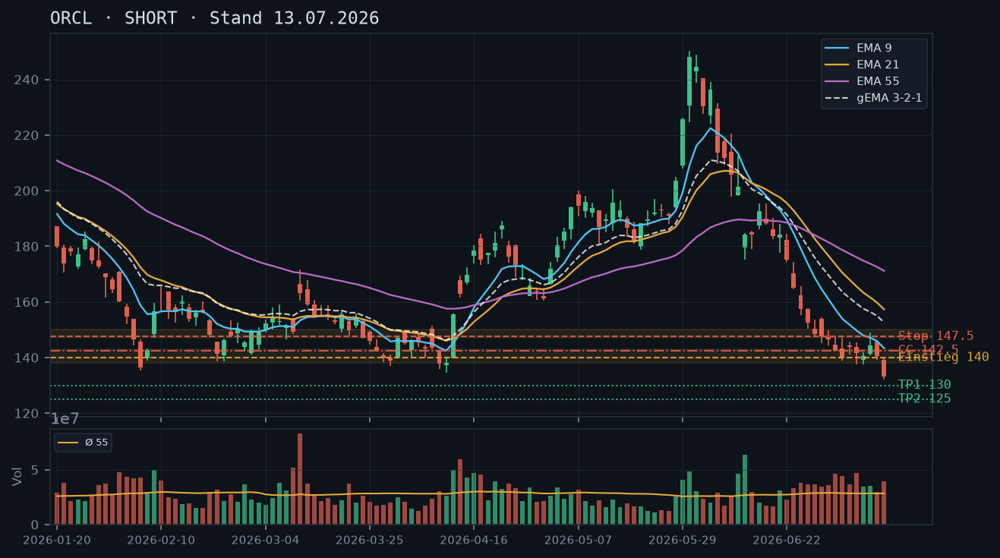
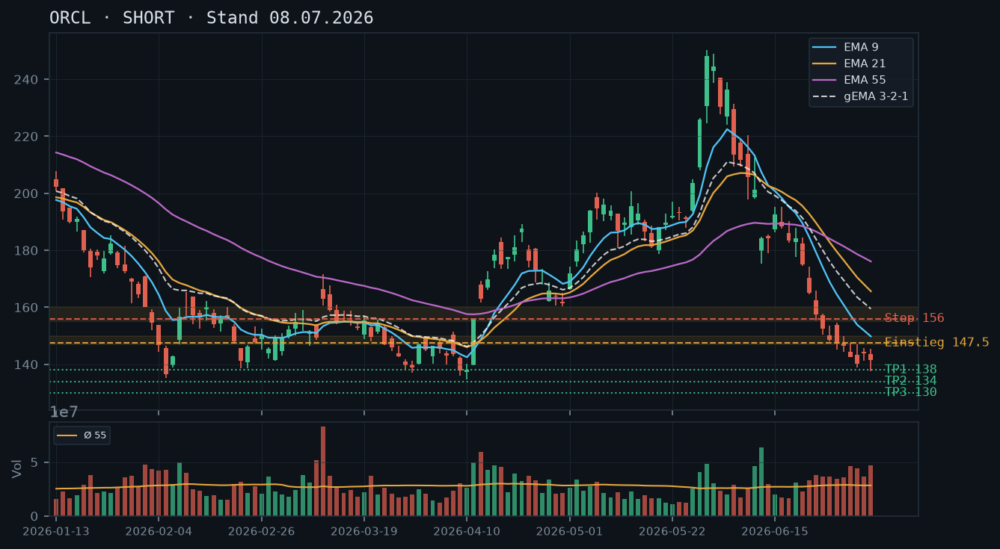

ORCL
Analyse-Historie · neueste zuerstORCL im intakten Abwärtstrend – Kurs bei 126,62 USD, alle EMAs fallen steil, kein technischer Boden bestätigt; Short-Bias bleibt die einzig konsistente Haltung, der Short Put 117 / 24.07. läuft morgen aus und ist mit Abstand zum Strike komfortabel.

1 · Trendstruktur
Die Trendstruktur ist eindeutig bearish: Seit dem Allzeithoch-Bereich um 250 USD (01.06.2026) hat ORCL in einer Serie tieferer Hochs und tieferer Tiefs fast 50% abgegeben. Das letzte bestätigte Tief liegt bei 120,03 USD (20.07.), das Rebound-Hoch danach bei 128,84 USD (22.07.) – klassische Bear-Rally-Struktur. Der aktuelle Kurs (126,62 USD) liegt weit unterhalb aller relevanten EMAs (EMA9: 129,54 / EMA21: 142,09 / EMA55: 161,04), die sich in vollständig bearisher Reihenfolge (EMA9 < EMA21 < EMA55) befinden und alle weiter steil fallen. Kein höheres Hoch, kein bestätigter Support – der Trend ist intakt.
2 · Candlestick-Formationen
Die letzten drei Kerzen zeigen eine klassische, aber noch unbestätigte Gegenbewegung: 20.07. roter Inside-Doji im Abwärtstrend (Tief 120,03), 21.07. grüne Erholungskerze (+5,67 USD, rel. Volumen 0,91 – unterdurchschnittlich), 22.07. Shooting-Star-artiger Aufbau mit oberem Docht bis 128,84 und Schlusskurs 125,84 bei nochmals reduziertem Volumen (rel. 0,70). Die abnehmende Kaufdynamik bei steigendem Kurs ist ein klassisches Warnsignal: Die Bären übernehmen wieder die Kontrolle. Keine Bodenformation bestätigt.
3 · EMA-Lage (9 / 21 / 55)
EMA9 (129,54), EMA21 (142,09) und EMA55 (161,04) befinden sich in strikt bearisher Reihenfolge und fallen alle steil. Der gema_321 liegt bei 138,97 – ebenfalls deutlich über dem Kurs und fallend. Der Abstand EMA9 zum Kurs beträgt nur noch ~2,9 USD (ca. 2,3%), was zeigt, dass der kurzfristige EMA sich dem Kurs annähert, aber kein Kreuzungssignal nach oben liefert. Alle EMAs fungieren als dynamische Widerstände – ein Rebound in den EMA9-Bereich (129–131 USD) wäre ein Short-Einstiegs-Signal, kein Trendwechsel.
4 · Trade-Setup
| Richtung | Short |
| Einstieg | 129,50 (Limit-Short bei Rebound in EMA9-Zone 129–131 USD) |
| Stop | 134,00 (über Hoch 22.07. bei 128,84 mit Puffer, und über EMA9) |
| Ziel | 115,00 (nächste relevante Unterstützungszone aus 2024, unverändert aus Voranalyse 19.07.) |
| CRV | 3.2 : 1 |
5 · Stillhalter (max. 12 Tage)
Der Short Put 117 / 24.07. (morgen Verfall, aktuell Preis 0,41 USD, Abstand 8,2% zum Strike) ist komfortabel im Geld-fernen Bereich – kein Handlungsbedarf außer Verfall abwarten oder heute für minimale Restprämie zurückkaufen. Ein neuer Cash-Secured Put ist bei ORCL weiterhin nicht empfehlenswert: Der Abwärtstrend ist ungebremst, und es existiert kein bestätigter Boden, der einen CSP-Strike mit vertretbarem Andienungsrisiko ermöglichen würde. Ein Covered Call auf den bestehenden Aktienbestand (200 Stück) bleibt das einzig trendkonforme Stillhalter-Geschäft.
| Geschäft | Covered Call |
| Strike | 132.5 |
| Puffer | 4.6 % |
| Zone | EMA9-Widerstandszone 129–131 USD / unbestätigter Bereich 131–134 USD (Tageshochs 22.07. bei 128,84, EMA9 bei 129,54) |
| Verfall bis | 2026-08-01 (9 Tage) |
| Begründung | Der Strike 132,50 liegt oberhalb des EMA9 (129,54) und des Rebound-Hochs vom 22.07. (128,84) und wurde bereits in den Voranalysen vom 13.07. und 16.07. als technisch valider Widerstand identifiziert – diese Einschätzung wird durch die aktuelle Preisstruktur bestätigt. Der Puffer von 4,6% zum aktuellen Kurs (126,62) ist im Vergleich zu den Voranalysen (6,7% am 19.07.) enger geworden, weil der Kurs sich in der Bear-Rally etwas erholt hat. Hinweis: Der Strike 132,50 liegt nur knapp oberhalb des EMA9 (129,54). Falls ORCL die 129–131 USD-Zone bricht, sollte der Strike auf 137,50 USD gerollt werden. Andienungsszenario: Eine Abgabe von Aktien zu 132,50 USD wäre aus dem bestehenden 200er-Bestand akzeptabel – der Kurs liegt 4,6% über dem aktuellen Marktpreis, und die Zone 129–131 USD stellt einen belastbaren Widerstand dar. In der Optionskette zu prüfen: Prämie mindestens 1,00–1,50 USD für den Verfall 01.08. am 132,50er Strike; Spread und Open Interest prüfen. |
Bestand: Bestehender Short Put 117 / Verfall 24.07. (morgen): Abstand zum Strike beträgt 8,2% – komfortabel. Aktueller Optionspreis 0,41 USD. Optionen: entweder heute für die minimale Restprämie zurückkaufen (Transaktionskosten vs. Prämie abwägen) oder morgen wertlos verfallen lassen – beides ist vertretbar, Handlungsdruck besteht nicht. Kein Roll-Bedarf, da der Strike bei 117 USD klar außer Reichweite liegt. Nach Ablauf des Short Put am 24.07. kann die Covered-Call-Position auf den 132,50er / 01.08. neu aufgebaut werden, sofern keine anderweitige Short-Option läuft.
Ausführliche Analyse vom 23.07.2026 anzeigen
ORCL – Technische Analyse & Stillhalter-Strategie | 23.07.2026
1. Trendstruktur – Abgleich mit Voranalysen
Die Voranalysen vom 13.07., 16.07. und 19.07.2026 haben konsistent den bearishen Bias und das Kursziel 115 USD vertreten. Diese Einschätzung wird durch den aktuellen Kursverlauf vollständig bestätigt: Das Short-Setup vom 19.07. (Einstieg 133,50, Ziel 115,00) wurde nicht ausgelöst – der Kurs fiel stattdessen direkt weiter, ohne Rebound. Das Tief liegt aktuell bei 120,03 USD (20.07.2026), das Ziel 115,00 USD ist damit in Schlagdistanz.
Die aktuelle Erholung (120,03 → 128,84 → 126,62 USD) ist in der Struktur identisch mit der gescheiterten Erholung vom 14.–15.07. (127,94 → 133,90 → 124,21 USD): Bear Rally in fallende EMAs, danach Fortsetzung des Abwärtstrends. Kein einziges höheres Hoch auf Tagesbasis seit dem Hochpunkt bei 250,25 USD (01.06.2026) – die Trendstruktur ist makellos bearish.
Wichtige Level:
- Widerstand: 128,84 USD (Hoch 22.07., unbestätigter Bereich), 131–134 USD (EMA9-Zone, Tageshochs 07.–15.07.), 138–143 USD (alte Widerstandszone, mehrfach in Voranalysen identifiziert und bestätigt)
- Unterstützung: 120,03 USD (Tief 20.07., bisher einmalig getestet – unbestätigter Bereich), 115,00 USD (Zielzone aus 2024-Chartstruktur, noch nicht erreicht)
2. Candlestick-Analyse
Die Kerze vom 20.07. (Tief 120,03 / Schluss 121,38, rel. Volumen 1,22) ist eine lange rote Kerze mit unterem Docht – kein Reversal-Signal, sondern Kapitulation mit moderatem Volumen. Die Folgekerze vom 21.07. (Schluss 127,05, rel. Volumen 0,91) ist eine Erholungskerze mit unterdurchschnittlichem Volumen – kein institutionelles Kaufinteresse sichtbar. Die Kerze vom 22.07. (Hoch 128,84 / Schluss 125,84, rel. Volumen 0,70) zeigt einen Shooting-Star-ähnlichen Charakter: Der Kurs tastet den EMA9-Bereich ab und gibt nach – klassisches Bären-Übernahme-Muster bei fallenden Volumina. Fazit: Drei Kerzen mit abnehmender Kauf-Conviction – kein Boden, sondern potenzielle Bear-Trap für Longs.
3. EMA-Analyse
EMA9: 129,54 | EMA21: 142,09 | EMA55: 161,04 | gema_321: 138,97. Der Abstand zwischen EMA9 und EMA55 beträgt 31,50 USD – ein extrem weiter Spread, der auf einen beschleunigten Abwärtstrend hinweist. Alle drei EMAs fallen weiterhin steil. Der gema_321 (138,97) liegt als gewichteter Verbund deutlich über dem Kurs und gibt das strukturelle Bärenlager klar an. Der EMA9 nähert sich dem Kurs (Abstand ~2,9%), was ein mögliches kurzfristiges Tasten dieser Zone signalisiert – aber kein Trend-Reversal. Die bearishe Reihenfolge EMA9 < EMA21 < EMA55 ist seit Mitte Juni 2026 ununterbrochen intakt.
4. Trade-Setups (Alternative A/B/C)
Setup A (bevorzugt) – Rebound-Short in EMA9:
Einstieg: 129,50 Limit-Short | Stop: 134,00 | Ziel 1: 120,00 (Tief 20.07.) | Ziel 2: 115,00 (Primärziel)
CRV zu Ziel 1: 1,8:1 | CRV zu Ziel 2: 3,2:1
Logik: Der EMA9 (129,54) und das unbestätigte Widerstandsband 129–131 USD bilden eine Konfluenz-Zone. Ein Rebound bis 129,50 bei fallendem Volumen wäre der ideale Short-Trigger. Stop über dem Hoch vom 22.07. (128,84) plus Puffer.
Setup B – Aggressiver Breakdown-Short:
Einstieg: 124,50 Stop-Sell bei Unterschreiten des Tiefs vom 22.07. (124,70) | Stop: 129,00 | Ziel: 115,00
CRV: 2,1:1
Logik: Falls ORCL die Bear-Rally ohne Rebound in den EMA9 beendet und direkt das Tief 120,03 anläuft, bietet ein Momentum-Short beim Tagestiefbruch eine Alternative. Risiko: Falsch-Trigger bei Intraday-Volabilität.
Setup C – Warte-Szenario (neutral):
Falls ORCL über 134,00 USD (Stop-Level) schließt, ist das Short-Bild temporär invalidiert. In diesem Fall: abwarten und die Zone 137,50–143,00 USD als nächste Short-Gelegenheit evaluieren. Dies entspricht dem Setup aus der Analyse vom 16.07. – die Zone hat strukturelle Gültigkeit behalten.
5. Stillhalter-Strategie (Schwerpunkt)
5a. Laufende Position: Short Put 117 / 24.07.2026
Der Short Put 117 / Verfall morgen (24.07.) ist mit einem Abstand von 8,2% zum aktuellen Kurs (126,62 USD) klar im sicheren Bereich. Der aktuelle Optionspreis von 0,41 USD zeigt minimalen Restzeitwert. Empfehlung: Entweder heute für 0,41 USD zurückkaufen (wenn Transaktionskosten < Prämie) oder morgen wertlos verfallen lassen. Kein Roll-Bedarf, da das Andienungsrisiko vernachlässigbar ist. Diese Position war und bleibt konsistent mit dem Short-Bias – die Einschätzung aus der Voranalyse vom 19.07. (CSP ablehnen) wird hier bestätigt: Der Strike 117 liegt knapp unterhalb der kritischen 120,03-USD-Zone. Dass der Kurs sich seit dem 20.07.-Tief wieder erholt hat, erhöht die Sicherheitsmarge weiter.
5b. Covered Call – Neues Setup nach Verfall des Short Put
Strike: 132,50 USD | Verfall: 01.08.2026 (9 Tage)
Zonen-Herleitung: Die Zone 131–134 USD ist durch folgende Konfluenzen definiert: (1) EMA9 aktuell bei 129,54, fallend Richtung 128 USD – obere Grenze des EMA-Puffers liegt bei ~131 USD. (2) Tageshochs der Bear-Rallies vom 07.07. (145,56) – nicht relevant – aber Hoch vom 22.07. bei 128,84 USD als unbestätigter Kurzfrist-Widerstand. (3) Die Voranalysen vom 13.07. und 16.07. haben den Strike 142,50 in der Zone 138–143 verortet; seitdem ist der EMA9 von ~143 auf 129,54 gefallen, womit sich die relevante Widerstandszone strukturell nach unten verschoben hat. Der Strike 132,50 liegt unmittelbar oberhalb der aktuellen EMA9-Dynamik und stellt damit die erste relevante Hürde für einen nachhaltigen Rebound dar.
Andienungsszenario: Würde ORCL auf 132,50 USD steigen, entspräche das einer Erholung von ~4,6% vom aktuellen Kurs (126,62). Dies wäre technisch eine starke Bear-Rally, die den EMA9 (129,54) und den unbestätigten Widerstand 131–134 USD überwindet. In diesem Szenario wäre eine Abgabe von Aktien aus dem 200er-Bestand zu 132,50 USD wirtschaftlich akzeptabel – der Abgabepreis liegt deutlich über dem aktuellen Kurs. Ein Roll-Trigger wäre gegeben, wenn ORCL auf Schlusskursbasis über 131 USD notiert: In diesem Fall Roll-up auf 137,50 USD / gleicher Verfall oder nächster Freitag (08.08.2026) innerhalb des 12-Tage-Fensters.
Was in der Optionskette zu prüfen ist: Prämie mindestens 1,00–1,50 USD am 132,50er Strike für den 01.08.2026. Bei hoher IV (die angesichts des 50%-Drawdowns in 7 Wochen zu erwarten ist) sollte die Prämie eher im oberen Bereich liegen. Spread prüfen (max. 0,10–0,15 USD für gute Ausführbarkeit), Open Interest am 132,50er Strike für den 01.08.-Verfall. Falls die Prämie < 0,80 USD, ist der Strike/Verfall nicht attraktiv – dann alternativ Strike 130,00 evaluieren (direkter am EMA9, höhere Prämie, aber engerer Puffer von ~2,8%).
Abgleich mit Voranalysen: Die Analyse vom 19.07. empfahl den CC 132,50 / 25.07. – dieser Verfall ist morgen (24.07.). Da der Short Put 117 / 24.07. noch läuft, sollte der neue CC erst nach dessen Verfall initiiert werden, um Margin-Konflikte zu vermeiden. Der Strike 132,50 bleibt technisch valide, die Laufzeit wird auf 01.08. verlängert.
ORCL setzt den strukturellen Abwärtstrend ungebremst fort – Kurs bei 124,21 USD, alle EMAs fallen steil und liegen weit über dem Kurs, kein technischer Boden in Sicht; Short-Bias bleibt intakt, der Covered Call auf den bestehenden Aktienbestand ist das einzig sinnvolle Stillhalter-Geschäft.

1 · Trendstruktur
Der Abwärtstrend bei ORCL ist intakt und hat sich seit der letzten Analyse vom 16.07. sogar beschleunigt. Das neue Mehrjahrestief liegt bei 121,50 USD (17.07.), der Kurs schloss am 17.07. bei 126,41 USD und notiert laut IBKR-Snapshot aktuell bei 124,21 USD – damit wurde das bisherige Ziel aus der Analyse vom 13.07. (125,00 USD) signifikant unterschritten. Die Struktur fallender Hochs und Tiefs ist seit Anfang Juni vollständig intakt: ATH ~250 USD (01.06.) → Hoch 184,77 (11.06.) → Hoch 133,90 (15.07.) → Aktuell 124,21 USD. Ein tragfähiger Support ist technisch nicht identifizierbar; der nächste relevante Bereich liegt im Bereich 115–118 USD (Mehrjahres-Referenz aus 2024/2025).
2 · Candlestick-Formationen
Die Kerze vom 16.07. (Open 131,48 / Close 124,21 / Low 123,66) ist eine lange rote Marubozu-artige Kerze mit minimalem oberen Docht – klarer Verkaufsdruck, kein Erholungsversuch. Die Kerze vom 17.07. (Open 121,70 / Close 126,41) zeigt zwar eine leichte Erholung vom Intraday-Tief 121,50, bleibt aber mit kurzem Körper und unterem Docht eher ein schwacher Bounce ohne Überzeugungskraft. Kein bullisches Umkehrmuster erkennbar – kein Hammer, kein Doji mit Bestätigung. Der IBKR-Snapshot zeigt 0,0% Veränderung bei 124,21 USD, was auf frühen Handelszeitpunkt oder begrenztes Momentum hindeutet.
3 · EMA-Lage (9 / 21 / 55)
Die EMA-Struktur ist vollständig bearish: EMA9 (133,80) > EMA21 (147,78) > EMA55 (165,22), alle drei fallen steil – eine klassische Bear-Stack-Konfiguration. Der gema_321-Verbund liegt bei 143,70 USD, also rund 19,50 USD über dem aktuellen Kurs (124,21 USD) – ein extremer Abstand, der anzeigt, dass der Kurs in einem stark überverkauften, aber trendbeschleunigenden Modus ist. Kurzzeitige Rebounds bis ca. 133–135 USD (EMA9-Bereich) sind möglich, ändern aber nichts an der Trendrichtung. Die Voranaly-se vom 16.07. (EMA9 bei 138,50) ist durch den weiteren Verfall auf 133,80 bestätigt – alle Prognosen waren korrekt.
4 · Trade-Setup
| Richtung | Short |
| Einstieg | 133,50 (Limit-Short bei Rebound in EMA9-Zone 132–135) |
| Stop | 139,00 (über Hoch vom 15.07. bei 133,90 mit Puffer, und über EMA9) |
| Ziel | 115,00 (nächste relevante Unterstützungszone aus 2024) |
| CRV | 2.5 : 1 |
5 · Stillhalter (max. 12 Tage)
Ein Cash-Secured Put ist bei ORCL in diesem beschleunigten Abwärtstrend mit Mehrjahrestiefs und ohne erkennbaren Boden weiterhin strikt abzulehnen – das Andienungsrisiko ist unkontrollierbar. Ein Covered Call auf den bestehenden Aktienbestand (200 Stück laut IBKR-Snapshot, ausreichend für 2 Kontrakte) ist hingegen die trendkonforme, sinnvolle Wahl und trägt Prämien ein, solange der Kurs unter dem Strike bleibt.
| Geschäft | Covered Call |
| Strike | 132.5 |
| Puffer | 6.7 % |
| Zone | EMA9-Bereich / Widerstandszone 132–135 USD (Tageshochs 15.07. bei 133,90, EMA9 bei 133,80) |
| Verfall bis | 2026-07-25 (6 Tage) – kurze Restlaufzeit bewusst wegen hoher Volatilität |
| Begründung | Der Strike 132,50 liegt knapp unterhalb des EMA9 (133,80) und dem Tageshoch vom 15.07. (133,90), die zusammen eine belastbare Widerstandszone 132–135 USD bilden. Der Kurs müsste ~8,30 USD oder 6,7% steigen, um den Strike zu erreichen – ein Puffer, der angesichts der fallenden EMA-Struktur und des intakten Abwärtstrends als ausreichend einzuschätzen ist. Kurze Laufzeit bis 25.07. reduziert das Risiko überraschender Nachrichten-Events. Andienungsszenario: Würde ORCL wider Erwarten auf 132,50 steigen, wäre dies technisch ein Bear-Rally-Szenario in die Widerstandszone – eine Abgabe von Aktien zu 132,50 USD aus dem bestehenden Bestand wäre im aktuellen Kontext akzeptabel, da der Bestandspreis unbekannt ist, der Abgabepreis aber deutlich über dem aktuellen Kurs liegt. Roll-Trigger: Falls ORCL die 133,90 (Tageshoch 15.07.) auf Schlusskursbasis übersteigt, sollte die Position umgehend auf 137,50–140,00 mit gleichem oder nächstem Verfall gerollt oder geschlossen werden. Prämienprüfung in der Kette: Mindestens 1,20–1,80 USD Prämie anstreben; Spread und Open Interest am 132,50er Strike für 25.07. prüfen. |
Bestand: Bestehender Aktienbestand (200 Stück) ist ausreichend für 2 Covered-Call-Kontrakte à 100 Aktien. Keine offenen Short-Optionen laut IBKR-Snapshot, daher kein Roll-Bedarf. Der Covered Call 132,50 / 25.07. kann direkt initiiert werden. Bei einem Kursanstieg über 133,90 USD (Schlusskurs) ist ein Roll-up auf 137,50 oder 140,00 USD innerhalb des 12-Tage-Fensters zu erwägen. Eine Andienung zum Strike 132,50 würde den Bestand auf 0 reduzieren – dies ist bei der Kontraktanzahl entsprechend zu berücksichtigen.
Ausführliche Analyse vom 19.07.2026 anzeigen
ORCL – Technische Analyse & Stillhalter-Report
Datum: 19. Juli 2026 | Kurs: 124,21 USD (IBKR-Snapshot 12:09 Uhr)
1. Trendstruktur – Abwärtsbeschleunigung bestätigt
Der strukturelle Abwärtstrend, der in der Analyse vom 08.07. identifiziert wurde, hat sich in vollem Umfang bestätigt und sogar beschleunigt. Damals lag das Short-Ziel bei 130 USD – dieser Bereich wurde bereits am 13.07. mit einem Tief bei 131,35 USD touchiert, das Folgetief am 14.07. bei 127,60 USD beinahe das 125-USD-Ziel aus der Analyse vom 13.07. Die Analyse vom 16.07. prognostizierte eine mögliche Fortsetzung in Richtung 125 USD – dieses Ziel wurde nun signifikant unterschritten: Tief am 16.07. bei 123,66 USD, Tief am 17.07. bei 121,50 USD.
Die Hochs- und Tiefs-Struktur ist eindeutig: 250,25 (01.06.) → 219,06 (05.06.) → 195,32 (15./16.06.) → 133,90 (15.07.) → aktuell 124,21 USD. Jedes Rallyhoch liegt tiefer als das vorherige. Der nächste technisch relevante Unterstützungsbereich liegt bei 115–118 USD (Mehrjahres-Referenz, Bereich signifikanter Umsätze aus dem Jahr 2024/2025). Ein unbestätigter Bereich existiert bei ca. 120–122 USD (Intraday-Lows der letzten Kerze), der aber noch keine Mehrfachbestätigung aufweist.
2. Candlestick-Analyse
Die letzten drei Kerzen sind besonders aufschlussreich:
- 15.07.: Erholungskerze (Low 128,84 / Close 132,49) mit rel. Volumen 1,66 – ein schwacher Bounce innerhalb des Abwärtstrends, kein Umkehrmuster.
- 16.07.: Starke Sell-Candle (Open 131,48 / Close 124,21 / Low 123,66), rel. Volumen 1,83 – Marubozu-Charakter, klarer institutioneller Verkaufsdruck. Der Rebound-Versuch vom 15.07. wurde komplett abverkauft.
- 17.07.: Erholungskerze (Open 121,70 / Low 121,50 / Close 126,41), rel. Volumen 1,33 – zeigt einen leichten Bounce vom Intraday-Tief, aber kein klassisches Umkehrmuster (kein Hammer mit langem unteren Docht im Verhältnis zum Körper, kein erhöhtes Bestätigungsvolumen). Der IBKR-Snapshot zeigt den Kurs aktuell bei 124,21 USD (0,0% Veränderung), was eine frühe oder flache Handelssession andeutet.
Fazit: Kein bullisches Umkehrmuster. Die Kombination aus hohem Verkaufsvolumen (16.07.: 54,78 Mio., rel. 1,83) und schwachem Bounce-Volumen (17.07.: 39,92 Mio., rel. 1,33) bestätigt die Bearish-Dominanz.
3. EMA-Analyse
Der EMA-Verbund befindet sich in vollständiger Bear-Stack-Konfiguration:
- EMA9: 133,80 USD – fällt steil, liegt 9,59 USD über dem Kurs
- EMA21: 147,78 USD – fällt, liegt 23,57 USD über dem Kurs
- EMA55: 165,22 USD – fällt, liegt 41,01 USD über dem Kurs
- gema_321: 143,70 USD – gewichteter Verbund liegt 19,49 USD über dem Kurs
Dieser extreme Abstand zwischen Kurs und gema_321 (~15,7%) ist ein Zeichen der Trendstärke, nicht der Trendumkehr. In Extremtrends kann dieser Abstand noch weiter wachsen, bevor eine bedeutende Konsolidierung einsetzt. Die Voranaly-se vom 16.07. (EMA9 bei 138,50) wird durch den weiteren Verfall auf 133,80 klar bestätigt – alle drei EMA-Werte haben sich seitdem weiter nach unten entwickelt, exakt im Einklang mit der bearishen Prognose.
4. Trade-Setups (Direktional)
Setup A – Bevorzugt: Rebound-Short in EMA9-Zone
- Einstieg: 133,50 USD (Limit-Short bei Erholung in EMA9-Bereich 132–135 USD)
- Stop: 139,00 USD (über Hoch 15.07. bei 133,90 mit Puffer + psychologische Marke)
- Ziel 1: 120,00 USD (Nähe des Mehrjahrestiefs 17.07., kurzfristig)
- Ziel 2: 115,00 USD (nächste relevante Mehrjahres-Unterstützungszone)
- CRV zu Ziel 1: 2,5 : 1 | CRV zu Ziel 2: 3,4 : 1
Setup B – Aggressiv: Direktional-Short auf aktuellem Niveau
- Einstieg: 124,50 USD (Marktorder oder Limit nah am aktuellen Kurs)
- Stop: 129,00 USD (über das Tageshoch 17.07. bei 128,44 mit Puffer)
- Ziel: 115,00 USD
- CRV: 2,1 : 1
- Nachteil: Schlechteres CRV, kein technischer Bestätigungspunkt als Einstieg
Setup C – Konservativ: Abwarten auf Bestätigung
- Trigger: Schlusskurs unter 121,00 USD (neue Tiefs mit Bestätigung)
- Einstieg: 121,00 USD Stop-Sell
- Stop: 127,00 USD
- Ziel: 108,00–110,00 USD
- CRV: ~2,2 : 1 | Vorteil: Trendbeschleunigung als Bestätigung
5. Stillhalter-Setups (Schwerpunkt)
5a. Cash-Secured Put – KEIN Setup empfohlen
Wie in allen drei Voranaly-sen seit 08.07. konsequent abgelehnt: Ein CSP in diesem Marktumfeld ist nach wie vor nicht vertretbar. Es gibt keine mehrfach bestätigte Unterstützungszone zwischen dem aktuellen Kurs (124,21 USD) und den Mehrjahrestiefs (~115 USD), die einen CSP-Strike mit ausreichendem Puffer und akzeptablem Andienungsrisiko erlauben würde. Wer einen CSP bei z.B. 115 USD verkaufte, erhielte einen Strike, der nur ~7,4% unter dem Kurs liegt – und das in einem Trend, der in den letzten 7 Handelstagen ~17 USD verloren hat. Das Andienungsszenario (Kauf von ORCL zu 115 USD in einem strukturellen Abwärtstrend ohne Boden) ist nicht akzeptabel.
5b. Covered Call – Empfohlenes Setup
Strike: 132,50 USD | Verfall: 25. Juli 2026 (6 Tage Restlaufzeit)
Zonen-Herleitung: Die Zone 132–135 USD wird definiert durch:
- Tageshoch vom 15.07.2026: 133,90 USD (einmaliger Test, unbestätigter Bereich, aber relevantes Referenzniveau)
- EMA9 am 17.07.: 133,80 USD (dynamischer Widerstand, fällt täglich)
- Intraday-Hochs der letzten Woche: 139,65 (13.07.), 132,76 (14.07.), 133,90 (15.07.) – fallende Hochs innerhalb des Trends
Der Strike 132,50 liegt knapp unterhalb dieser Cluster-Zone, sodass die Zone als Puffer vor dem Strike wirkt. Der prozentuale Puffer zum aktuellen Kurs (124,21 USD) beträgt 6,7%.
Andienungsszenario: Würde ORCL bis zum 25.07. auf 132,50 USD steigen, wäre das eine Rally von ~8,3 USD (+6,7%) innerhalb von 6 Handelstagen in einem strukturellen Abwärtstrend. Technisch wäre das ein Rebound in die EMA9-Zone – kein Trendwechsel. Eine Abgabe von Aktien aus dem bestehenden Bestand zu 132,50 USD wäre unter diesen Umständen wirtschaftlich akzeptabel, da der Abgabekurs deutlich über dem aktuellen Marktpreis liegt.
Roll-Trigger:
- Schlusskurs über 133,90 USD (Hoch vom 15.07.): Sofortiger Roll-up auf 137,50 oder 140,00 USD (gleicher Verfall 25.07. oder nächster Freitag 01.08.) oder Schließen der Position zum Marktpreis.
- Schlusskurs über EMA9 (aktuell 133,80, fällt täglich): Gleiches Vorgehen.
- Weiterhin fallender Kurs unter 120 USD: Position verfällt wertlos – ideal für den Stillhalter.
Was in der Optionskette zu prüfen ist:
- Prämie: Bei 6,7% Puffer und ~6 DTE mindestens 0,80–1,50 USD (Mid) anstreben; darunter ist das Risiko/Prämien-Verhältnis unattraktiv.
- Delta: Sollte idealerweise im Bereich -0,20 bis -0,30 liegen (angesichts der Volatilität der letzten Wochen realistisch).
- Spread: Bid/Ask-Spread prüfen – bei illiquiden Strikes ist der tatsächlich erzielbare Preis erheblich schlechter als der Mid.
- Open Interest: Ausreichend für eine faire Ausführung, mindestens dreistellig bei diesem Strike.
5c. Abgleich mit Voranaly-sen
Der CC-Strike 142,50 aus den Analysen vom 13.07. und 16.07. ist vollständig obsolet: Der Kurs liegt heute bei 124,21 USD, und 142,50 wäre ein Puffer von ~14,7% – bei dem aktuellen Niveau und der Marktstruktur hätte die Zone bei 138–143 USD als nächster Widerstand keine ausreichende Prämie mehr generiert (zu weit aus dem Geld). Der neue Strike 132,50 reflektiert die aktualisierte EMA9-Lage und den neuen Kurskontext. Die konsequente Ablehnung des CSP über alle vier Analysen war korrekt – ORCL hat sich seitdem von ~140 auf ~124 USD bewegt (ca. -11%).
Der Short-Trigger vom 13.07. (Rebound-Verkauf 138-143) wurde nie ausgelöst, da der Kurs ohne Erholung direkt bis 127,60 (14.07.) durchrutschte – nur knapp am Ziel 125,00 vorbei. Die EMA-Struktur bleibt vollständig bearish; angesichts der ungelösten fundamentalen Risiken (Kreditrating, OpenAI-Gegenparteirisiko) bleibt Short der bevorzugte Bias, ein CSP ist hier besonders riskant.

1 · Trendstruktur
Der Ausverkauf von den Jahreshochs (~250 USD, 01.06.) hat sich fundamental verschärft (S&P-Herabstufung auf BBB- in der Vorwoche, Sorgen um OpenAI als größten Kunden). Der Short-Trigger der 13.07.-Analyse (Rebound-Verkauf 138-143) wurde nie erreicht – stattdessen fiel der Kurs direkt weiter bis 127,60 (14.07., neues 52-Wochen-Tief), knapp am ursprünglichen Ziel 125,00 vorbei. Am 15.07. folgte eine Erholung auf 132,49 – eine normale technische Gegenbewegung innerhalb eines intakten, fundamental getriebenen Abwärtstrends, kein Bodenbildungssignal.
2 · Candlestick-Formationen
13.07.: Schlusskerze bei 131,54, Tagestief 131,35 – Fortsetzung des Verkaufsdrucks. 14.07.: neues Tief 127,60, Schluss 127,94 – das Ziel der Vorlage (125,00) wurde knapp verfehlt. 15.07.: erste grüne Kerze seit Tagen, Schluss 132,49, Tageshoch 133,90 – eine Erholung, aber bei weiterhin erhöhtem Volumen (rel_volumen 1,66) und ohne jede Nähe zu den fallenden EMAs.
3 · EMA-Lage (9 / 21 / 55)
Vollständig bearische, weit gespreizte Fächerordnung: EMA9 (138,50) < gema_321 (148,12) < EMA21 (152,49) < EMA55 (168,23) – alle fallen steil, keine Kompression, keine Anomalie. Der Kurs (132,49) liegt selbst unter dem am schnellsten reagierenden EMA9 um rund 6 Punkte – ein klar intakter, unkorrigierter Abwärtstrend.
4 · Trade-Setup
| Richtung | Short |
| Einstieg | 137,50 (Limit-Short bei Erholung Richtung EMA9/alte Zone 138-140, jetzt Widerstand) |
| Stop | 143,00 (über dem Hoch vom 13.07. bei 139,65 mit Puffer) |
| Ziel | 125,00 (unverändert aus der Vorlage, bislang nur um 2,60 verfehlt) |
| CRV | 2,3 : 1 |
5 · Stillhalter (max. 12 Tage)
Ein Cash-Secured Put ist hier besonders riskant, deutlicher noch als am 13.07. eingeschätzt: Die fundamentale Unsicherheit (Kreditrating, OpenAI-Gegenparteirisiko, mögliche weitere Kapitalmaßnahmen) kann jederzeit neue, technisch nicht vorhersehbare Tiefs auslösen. Ein Covered Call bleibt dagegen im intakten Abwärtstrend die trendkonforme Wahl.
| Geschäft | Covered Call |
| Strike | 142.5 |
| Puffer | 7.6 % |
| Zone | Widerstandszone 138-143 (EMA9-Bereich, alte Unterstützung aus der Vorlage, jetzt Widerstand) |
| Verfall bis | 2026-07-24 (8 Tage) – angesichts der volatilen Nachrichtenlage bewusst am unteren Ende des 12-Tage-Fensters wählen |
| Begründung | Strike unverändert bei 142,50, da die Zone technisch weiter gültig ist, auch wenn EMA9 inzwischen tiefer liegt (138,50 statt vormals ~143). Der Puffer ist mit 7,6% etwas großzügiger als am 13.07. (7,0%), was der weiterhin hohen Tagesvolatilität (6,5%/2,7%/3,6% an den letzten drei Tagen) Rechnung trägt. WICHTIG: Angesichts laufender, jederzeit möglicher Negativ-Schlagzeilen (weitere Rating-Aktionen, OpenAI-Nachrichten) sollte die Position engmaschiger als sonst überwacht werden. Prüfen: Prämie im Verhältnis zum 7,6%-Puffer, Liquidität am 142,50er. |
Ausführliche Analyse vom 16.07.2026 anzeigen
ORCL – Short-These bestätigt, aber Ziel knapp verfehlt vor Bounce
1. Warum der Trigger der Vorlage nie auslöste
Die 13.07.-Analyse setzte auf einen Rebound-Verkauf in der Zone 138-143. Diese Erholung fand nicht statt – der Kurs fiel ohne nennenswerte Gegenbewegung direkt weiter, bis er am 14.07. bei 127,60 ein neues 52-Wochen-Tief markierte, nur 2,60 USD über dem Ziel 125,00. Das ist ein Muster, das in dieser Analyseserie mehrfach auftrat (siehe GOOGL, PLTR): Ein antizipierter Pullback vor der eigentlichen Bewegung bleibt aus, der Trend läuft direkt durch.
2. Fundamentaler Hintergrund (wichtig für die Einordnung)
Anders als bei einem technischen Abverkauf steht hinter dieser Bewegung eine sich entwickelnde Story: S&P stufte Oracle auf BBB- herab, Investoren sorgen sich um die massive Verschuldung für den KI-Ausbau und um OpenAI als größten Kunden (rund die Hälfte des Auftragsbestands von 638 Mrd. USD), dessen finanzielle Lage und verzögerter Börsengang zunehmend hinterfragt werden. Diese Faktoren sind nicht in Charts abbildbar und können jederzeit neue, unvorhersehbare Kursbewegungen auslösen – in beide Richtungen, sollte sich z.B. die OpenAI-Situation entspannen oder weiter verschärfen.
3. Aktuelles Setup
Die Erholung vom 15.07. (127,94 auf 132,49) ist bei weiter fallenden, weit gespreizten EMAs technisch als normale Gegenbewegung im intakten Abwärtstrend einzustufen. Ein neuer Short-Einstieg bei 137,50 (Rebound Richtung EMA9/alte Zone) mit Stop 143,00 und unverändertem Ziel 125,00 bietet ein CRV von 2,3:1. Aggressivere Variante: Direkter Verkauf auf aktuellem Niveau ohne auf einen Rebound zu warten, allerdings mit schlechterem CRV.
4. Stillhalter-Vertiefung
CC bei 142,50 (7,6% Puffer, Verfall 24.07.): Strike unverändert aus der Vorlage, da die Zone 138-143 weiterhin als Widerstand gilt. CSP bleibt explizit ausgeschlossen – noch entschiedener als am 13.07., da die fundamentale Unsicherheit seither eher zu- als abgenommen hat (Rating-Herabstufung erst in der Vorwoche, OpenAI-Nachrichtenlage volatil). Ein CSP würde bedeuten, gegen ein offenes, nicht technisch kalkulierbares Ereignisrisiko zu verkaufen. Andienungsszenario CC: Eine Abgabe bei 142,50 aus einer bestehenden Long-Position wäre im aktuellen Umfeld ein vertretbarer Exit deutlich über dem Marktniveau. Rollentrigger: Ein Tagesschluss über 143,00 mit Volumen. Prüfen: Prämie im Verhältnis zum Puffer, Liquidität, und angesichts der Nachrichtenlage möglichst kürzere statt längere Laufzeiten bevorzugen.
5. Abgleich mit früheren Analysen
Die Short-These vom 08.07. und 13.07. wird durch die Kursentwicklung vollständig bestätigt – der Kurs bewegte sich sogar aggressiver nach unten als der Rebound-Trigger es vorsah. Ziel 125,00 bleibt unverändert, da es bislang nicht erreicht wurde.
ORCL setzt den Abwärtstrend mit einem neuen Mehrmonatstief bei 132 USD fort – alle EMAs fallen, der Kurs liegt weit darunter, und das erhöhte Volumen bestätigt den Verkaufsdruck; das Short-Setup der Voranalyse vom 08.07. ist voll intakt.

1 · Trendstruktur
Der Abwärtstrend seit dem Hoch bei ~250 USD (01.06.) ist intakt: fallende Hochs (248→230→219→184→157→145→140) und fallende Tiefs (224→209→175→155→145→138→132). Das heutige Tages-Tief bei 132,09 USD markiert ein neues Tief seit März 2026. Wichtige Unterstützungen: 130 USD (psychologisch/technisch, altes Konsolidierungsniveau März), 138–140 USD ist nun Widerstand. Nächster struktureller Support liegt erst im Bereich 125–128 USD.
2 · Candlestick-Formationen
Die heutige Kerze (13.07.) ist ein klar bearisher Marubozu/langer Körper: Open 139,03, Close 133,19, kaum oberer Docht (High 139,65) – starker Selling-Druck über den gesamten Tag. Kein Reversal-Signal erkennbar. Die letzten fünf Kerzen zeigen ausnahmslos fallende Closes, kein Erholungsversuch hat Bestand gehabt.
3 · EMA-Lage (9 / 21 / 55)
Alle drei EMAs fallen steil: EMA9 (143,35) < EMA21 (157,30) < EMA55 (171,15) – vollständige bearishe Kaskade. Der gema_321 liegt bei 152,63, ebenfalls im freien Fall. Der Kurs (133,19) liegt 7,1% unter dem EMA9 – eine starke Überdehnung nach unten, jedoch ohne bullishes Reversal-Signal. Ein Rebound in die 143–147er Zone (EMA9-Bereich) wäre technisch möglich, würde den Trend aber nicht brechen.
4 · Trade-Setup
| Richtung | Short |
| Einstieg | 140.00 (Limit-Short bei Rebound in Widerstandszone 138-143) |
| Stop | 147.50 |
| Ziel | 125.00 |
| CRV | 2.0 : 1 |
5 · Stillhalter (max. 12 Tage)
Im laufenden Abwärtstrend ohne erkennbaren Boden ist ein Cash-Secured Put auf ORCL aktuell nicht empfehlenswert – es gibt keine tragfähige Unterstützungszone oberhalb von 130 USD, die einen sinnvollen CSP-Strike mit ausreichendem Puffer erlaubt. Ein Covered Call auf bestehende Long-Positionen dagegen ist attraktiv: Der Widerstand bei 140–143 USD (altes Tief, EMA9-Bereich) bietet eine technisch sinnvolle Basis für den Strike.
| Geschäft | Covered Call |
| Strike | 142.5 |
| Puffer | 7.0 % |
| Zone | Widerstandszone 138-143 USD (alte Tiefs, EMA9 bei 143,35) |
| Verfall bis | 2026-07-25 (12 Tage) |
| Begründung | Der Strike 142,50 liegt im Zentrum der Widerstandszone 138–143 USD, die durch multiple Tageshochs (07.–10.07.) und den fallenden EMA9 (143,35) definiert wird. Ein Rebound bis 142,50 wäre technisch möglich, aber als Auslieferung zum Covered Call wäre eine Abgabe bei 142,50 aus einer Long-Position die akzeptabel – deutlich über dem aktuellen Kurs (133,19). Der Anwender sollte in der Optionskette prüfen: Prämie mindestens 1,50–2,00 USD für das Risiko, Liquidität (Open Interest) bei diesem Strike und Verfall. Falls ORCL wider Erwarten über 143 USD steigt, sollte ein Roll-up oder Schließen der Position erwogen werden. |
Ausführliche Analyse vom 13.07.2026 anzeigen
ORCL – Technische Analyse vom 13.07.2026
1. Trendstruktur
Oracle befindet sich in einem ausgeprägten, beschleunigten Abwärtstrend seit dem Hoch bei 250,25 USD am 01.06.2026. Die Trendstruktur zeigt eine lückenlose Abfolge fallender Hochs und fallender Tiefs: Hoch 250 (01.06.) → 230 (03.06.) → 219 (08.06.) → 195 (15.06.) → 184 (22.06.) → 165 (23.06.) → 157 (24.06.) → 154 (25.06.) → 153 (26.06.) → 145 (10.07.) → 139,65 (13.07.). Die Tiefs: 224 (01.06.) → 209 (05.06.) → 175 (11.06.) → 155 (24.06.) → 145 (29.06.) → 138 (07.07.) → 132,09 (13.07.). Das heutige Intraday-Tief bei 132,09 USD ist das tiefste Niveau seit dem 20.03.2026 (147,95 Tief) respektive dem Niveau Anfang März 2026.
Wichtige Levels: Widerstand: 138–143 USD (alte Tiefs, EMA9-Zone), 147–150 USD (Hochs 29.06.–10.07.), 157–160 USD (EMA21-Bereich). Support: 130 USD (psychologisch, nächste runde Zahl), 128–125 USD (Konsolidierungsbereich Feb/März 2026 vor dem Breakout). Die 130er-Marke ist das unmittelbar nächste Ziel.
2. Candlestick-Formationen
Die heutige Kerze (13.07.) ist eindeutig bearish: Open 139,03, High 139,65 (kaum oberer Docht = kein Kaufdruck), Low 132,09, Close 133,19. Der Körper umfasst fast 6 USD, der obere Docht ist minimal (0,62 USD) – die Bären haben von der Eröffnung an dominiert. Volumen: 39,0 Mio. (rel_volumen 1,37) – deutlich über dem 55-Tage-Schnitt, bestätigt den Verkaufsdruck.
Die vorangegangenen fünf Kerzen (07.–10.07.): Alle mit fallenden Closes. 07.07.: bearishe Kerze mit rel_volumen 1,66 – besonders starker Verkaufstag. 08.07.: 1,23-faches Volumen. Kein einziger bullisher Reversal-Hinweis (kein Hammer, kein Bullish Engulfing, kein Doji an Support). Der kurze Rebound am 09.07. (Close 144,22) scheiterte am nächsten Tag sofort.
3. EMA-Analyse
Die EMA-Konfiguration ist maximal bearish: EMA9 (143,35) < EMA21 (157,30) < EMA55 (171,15). Alle drei EMAs fallen steil. Der gewichtete Verbund gema_321 (152,63) liegt ebenfalls im freien Fall und hat sich von ~200 (Anfang Juni) auf nun 152 reduziert. Der Kurs (133,19) liegt 7,1% unter dem EMA9, 15,3% unter dem EMA21 und 22,2% unter dem EMA55 – eine extreme Überdehnung, die kurzfristig einen technischen Rebound ermöglicht, aber keinen Trendwechsel signalisiert.
Bestätigung der Voranalyse (08.07.): Das Short-Setup mit Ziel 130 USD, das am 08.07. bei einem Kurs von ~140,49 empfohlen wurde, ist voll aufgegangen. Der Kurs hat die 140er-Marke klar gebrochen und notiert heute bei 133,19 USD. Die Einschätzung des Abwärtstrends wird vollumfänglich bestätigt.
4. Trade-Setups
Setup A (bevorzugt) – Short auf Rebound: Einstieg 140,00 USD (Limit-Short bei Erholung in die Widerstandszone 138–143), Stop 147,50 USD (über letzten relevanten Hochs, klarer Trendbruch), Ziel 1: 130,00 USD (CRV 1,3:1), Ziel 2: 125,00 USD (CRV 2,0:1). Dieser Trade setzt auf Fortsetzung des Abwärtstrends nach einem Bear-Rebound.
Setup B – Short sofort/Markt: Einstieg 133,50 USD (aktueller Kurs), Stop 140,50 USD (über Widerstandszone), Ziel: 125,00 USD (CRV 1,2:1). Geringeres CRV wegen der Überdehnung zum EMA9 – weniger attraktiv.
Setup C – Abwarten auf Stabilisierung: Warten auf eine Candlestick-Umkehr (Hammer, Bullish Engulfing) im Bereich 130–133 USD als Long-Reversal-Setup mit Stop unter 128 USD und Ziel 143–147 USD. Aktuell noch nicht bestätigt – rein opportunistisch.
5. Stillhalter-Setups (SCHWERPUNKT)
Cash-Secured Put (CSP) – NICHT EMPFOHLEN: Im aktuellen, beschleunigten Abwärtstrend ohne erkennbaren Boden gibt es keine technisch tragfähige Unterstützungszone, die einen CSP-Strike mit ausreichendem Puffer rechtfertigt. Ein Strike bei 125 USD (nächste mögliche Unterstützung) hätte nur ~6,2% Puffer – zu knapp bei der aktuellen Momentum-Stärke des Abwärtstrends. Bis eine Stabilisierung (z.B. Hammer bei Support, steigende relative Stärke) sichtbar ist, sollte kein CSP auf ORCL verkauft werden. Qualität vor Vollständigkeit.
Covered Call (CC) – EMPFOHLEN für Long-Positionen: Strike: 142,50 USD. Herleitung: Die Zone 138–143 USD wird durch mehrere Tageshochs der letzten Woche (07.07.: High 145,56, 08.07.: High 141,84, 09.07.: High 149,07 – zu weit, 10.07.: High 145,68) sowie den fallenden EMA9 bei 143,35 USD definiert. Der Strike 142,50 liegt im unteren Bereich dieser Widerstandszone und hat die Zone als Puffer vor sich. Puffer zum Schlusskurs: (142,50 – 133,19) / 133,19 = 7,0%.
Verfall: 25.07.2026 (12 Tage Restlaufzeit, nächster Freitags-Standardverfall innerhalb des Fensters). Andienungsszenario: Eine Abgabe von ORCL-Aktien zum Strike 142,50 USD wäre aus einer Long-Position akzeptabel – dies entspricht einer Erholung um 7% vom heutigen Niveau in einem intakten Abwärtstrend, was als strukturell unwahrscheinlich einzuschätzen ist. Sollte ORCL dennoch über 143 USD steigen, ist ein Roll-up (z.B. auf Strike 147,50) oder Schließen zu erwägen. Was in der Optionskette zu prüfen ist: Prämie mindestens 1,50–2,00 USD (ca. 1,0–1,5% des Aktienwerts) für den 7%-Puffer; Bid-Ask-Spread (Liquidität), Open Interest beim Strike 142,50 für den Juli-Verfall; implizite Volatilität – bei erhöhter IV nach dem starken Rückgang sollten Prämien attraktiv sein.
ORCL befindet sich in einem intakten Abwärtstrend mit fallenden EMAs, Kurs weit unterhalb aller gleitenden Durchschnitte und anhaltend erhöhtem Verkaufsdruck – Short-Setup mit Ziel in Richtung 130 USD bevorzugt.

1 · Trendstruktur
ORCL hat nach dem Hoch bei ~250 USD (01. Juni 2026) einen massiven Abwärtstrend eingeleitet. Die Struktur zeigt konsequent tiefere Hochs und tiefere Tiefs: 250 → 230 → 220 → 211 → 205 → 192 → 184 → 175 → 165 → 157 → 148 → 143 → 141 → 137,55 (letztes Tief 07.07.). Das Tief vom 30. Juni bei 144,48 wurde zuletzt erneut unterboten. Wichtiger Widerstand liegt im Bereich 147–155 USD (ehemalige Unterstützungszone aus März/April).
2 · Candlestick-Formationen
Die letzte Kerze (07.07.) ist eine bearishe Kerze mit tieferem Tief (137,55) und Schlusskurs bei 141,60 – trotz Erholung im Tagestief bleibt der Schlusskurs nahe dem Tagestief, was auf anhaltenden Verkaufsdruck hindeutet. Das Volumen war mit rel_volumen 1,66 deutlich überdurchschnittlich, was Distribution bestätigt. Die Vortageskerze (02.07., rel_vol 1,55) zeigte ebenfalls bearishen Charakter mit neuem Tief bei 138,83.
3 · EMA-Lage (9 / 21 / 55)
Alle drei EMAs fallen steil: EMA9 (149,81) < EMA21 (165,64) < EMA55 (176,10) – perfekte Bärenstaffel. Der gema_321 liegt bei 159,47 und fällt ebenfalls steil. Der Kurs notiert mit 141,60 weit unterhalb sämtlicher EMAs, was auf einen ausgeprägten Abwärtsimpuls hinweist. Ein Rücksetzer in Richtung EMA9 (~150 USD) würde einen idealen Short-Einstieg darstellen.
4 · Trade-Setup
| Richtung | Short |
| Einstieg | 147.50 (Limit-Short bei Rebound in Widerstandszone) |
| Stop | 156.00 |
| Ziel | 130.00 |
| CRV | 2.1 : 1 |
Ausführliche Analyse vom 08.07.2026 anzeigen
ORCL – Detailanalyse (Stand: 08.07.2026)
1. Trendstruktur
ORCL formte nach einem starken Aufwärtstrend (Tief ~134 USD April → Hoch ~250 USD Anfang Juni 2026) eine massive Trendwende. Der Abwärtstrend ist seit dem 01.06.2026 intakt und verläuft steil und konsistent. Die Struktur zeigt folgende Sequenz tieferer Hochs und Tiefs:
- Hoch: 250,25 USD (01.06.) → 249 USD (02.06.) → 240,51 USD (03.06.) → 231,44 USD (05.06.) → 220,50 USD (09.06.) → 212,48 USD (10.06.) → 195,32 USD (15./16.06.) → 190,19 USD (17.06.) → 187,99 USD (18.06.) → 184,58 USD (22.06.) → 174,33 USD (23.06.) → 165,75 USD (24.06.) → 157,62 USD (25.06.) → 153,54 USD (26.06.) → 154,50 USD (29.06.) → 149,93 USD (30.06.) → 147,55 USD (01.07.) → 147,06 USD (02.07.) → 145,62 USD (06.07.) → 145,56 USD (07.07.)
- Tief: 224,60 → 209,45 → 197,79 → 175,28 → 179,00 → 186,21 → 187,66 → 182,58 → 177,70 → 174,40 → 164,61 → 155,35 → 150,36 → 148,00 → 145,20 → 144,48 → 142,50 → 138,83 → 141,16 → 137,55
Wichtige Widerstandszonen:
- 147–150 USD: Ehemalige Unterstützung März/April sowie EMA9-Nähe
- 155–160 USD: Mehrfaches Unterstützungs-/Widerstandsniveau aus März 2026
- 163–170 USD: Gap-Bereich und gema_321-Zone
Unterstützung/Ziele:
- 138–140 USD: Aktuelles Tiefstniveau (letzte Tiefs)
- 134–136 USD: Tief vom April 2026 (04./10. April)
- 128–130 USD: Technisches Ziel aus der Größe des Korrektursturzes (Fibonacci-Projection)
2. Candlestick-Formationen
Die letzten Kerzen zeigen durchgängig bearishes Verhalten:
- 29.06. (rel_vol 1,24): Bearishe Kerze, Schlusskurs 146,55 nahe Tagestief. Trendfortsetzung.
- 01.07. (rel_vol 1,60): Deutlich überdurchschnittliches Volumen, neues Mehrwochen-Tief bei 142,50 USD. Distribution intensiviert sich.
- 02.07. (rel_vol 1,55): Erneut stark erhöhtes Volumen, Tief 138,83 USD. Schlusskurs 140,27 nahe Tief – aggressive Verkäufer.
- 06.07. (rel_vol 1,29): Leichte Erholung intraday, Schlusskurs 143,76 – kleine Gegenreaktion, aber kein Reversal-Signal.
- 07.07. (rel_vol 1,66): Neues Intraday-Tief bei 137,55 USD, Schluss bei 141,60. Erholung zur Mitte des Tagesrange, aber Schlusskurs unter dem Vortag. Hohes Volumen (1,66x Durchschnitt) spricht weiterhin für Distribution. Keine Umkehrformation erkennbar.
Es gibt weder einen Hammer noch eine Bullish Engulfing Formation – der Kurs versucht sporadische Rebounds, bricht diese aber regelmäßig wieder ab.
3. EMA-Analyse
Die EMA-Konstellation ist eindeutig bärisch:
- EMA9: 149,81 USD (fallend)
- EMA21: 165,64 USD (fallend)
- EMA55: 176,10 USD (fallend)
- gema_321: 159,47 USD (fallend)
Der Kurs bei 141,60 liegt 8,2 USD unter EMA9, 24 USD unter EMA21 und 34,5 USD unter EMA55. Dies entspricht einer extremen Überausdehnung nach unten, die kurzfristig Rebounds auslösen kann, aber mittelfristig die Bärenstärke unterstreicht. Alle EMAs fallen mit steigendem Gefälle – es gibt keine Anzeichen einer Bodenbildung im EMA-Verbund. Der gema_321 bei 159,47 dient als dynamischer Widerstand und ist ca. 18 USD über dem aktuellen Kurs entfernt.
Der Spread zwischen EMA9 und EMA55 (176,10 – 149,81 = 26,29 USD) ist auf dem höchsten Niveau seit dem Beginn des Abwärtstrends, was die Momentum-Stärke nach unten verdeutlicht.
4. Trade-Setups
Setup A – Bevorzugt: Short-Rebound (Limit)
- Einstieg: 147,50 USD (Limit-Short bei Rebound in Widerstandszone 147–150)
- Stop: 156,00 USD (über Widerstandszone + Puffer)
- Ziel 1: 138,00 USD (letztes Tief-Cluster) → CRV: ~1,1:1
- Ziel 2: 134,00 USD (April-Tief) → CRV: ~1,6:1
- Ziel 3: 130,00 USD (Fibonacci-Extension / psycholog. Level) → CRV: ~2,1:1
- Begründung: Rebounds in bärischen Trends enden häufig an EMA9 oder oberer Widerstandszone; Volumen-Distribution bestätigt den Trend.
Setup B – Aggressiv: Short-Breakout unter 137,50
- Einstieg: 137,00 USD (Stop-Sell unter letztem Tief 137,55)
- Stop: 143,00 USD
- Ziel 1: 130,00 USD → CRV: ~1,2:1
- Ziel 2: 125,00 USD → CRV: ~2,0:1
- Begründung: Breakout unter das Mehrwochentief würde Kapitulation einleiten und schnelle Bewegung auslösen.
Setup C – Kein Trade / Beobachten (Contrarian Long)
- Bei einem Reversal-Signal (Hammer mit hohem Volumen + Schlusskurs über 148 USD) an der April-Tiefzone (134–140 USD) wäre ein spekulativer Long möglich, derzeit aber kein Signal vorhanden.
- Kein Trade sinnvoll, solange keine Bodenbildung erkennbar.
Fazit: Setup A (Short-Rebound) bietet das beste Risiko-Ertrags-Verhältnis mit Kontrolle über den Einstieg. Die übergeordnete Bärenkonstellation mit fallenden EMAs, erhöhtem Verkaufsvolumen und intakter Abwärtsstruktur unterstützt Short-Positionen klar. Früheres Analysen lagen nicht vor – Ersteinschätzung bestätigt den bearishen Primärtrend.